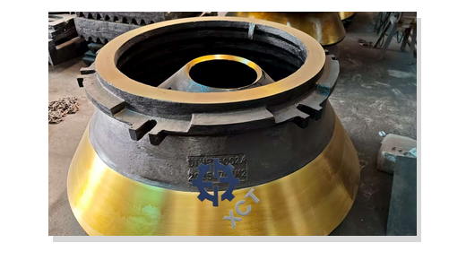

Mantle, bowl liner and concave
Choose Mn13Cr2, Mn18Cr2, Mn22Cr2 or a duty-based option after reviewing rock abrasiveness, impact load, feed size, CSS and current liner life.
HP series compatibility page
XCT Mining quotes aftermarket HP series cone crusher parts for maintenance teams that need liners, bronze components and changeout spares by model, part number, drawing or used-part photos.
Metso and Nordberg are trademarks of their respective owners. XCT Mining is an independent aftermarket supplier and is not an authorized dealer, distributor or affiliate.

Choose Mn13Cr2, Mn18Cr2, Mn22Cr2 or a duty-based option after reviewing rock abrasiveness, impact load, feed size, CSS and current liner life.
Bronze part inquiries should include position, drawings or dimensions, oil-groove details and photos of wear marks when available.
Maintenance buyers often combine liners and mechanical spares in one shipment to reduce downtime during liner replacement.
MOQ can start from 1 pc. XCT supports OEM/ODM, production from drawings or samples, export packing and mixed spare-part orders.
Buyer FAQ
Start with HP300 cone crusher parts or HP500 cone crusher parts for model-specific RFQ guidance.
Photos can start the review, but part number, dimensions, chamber profile or a drawing may still be needed before production.